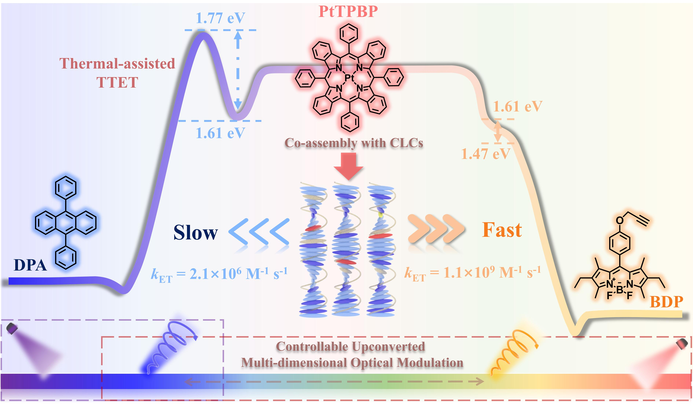

三重态-三重态湮灭上转换（TTA-UC）因其能将低能量光有效转化为高能量发射而备受关注。这一过程不仅绕开了高能激发所带来的光漂白和背景荧光干扰等传统难题，也为发展新型低功耗光电功能材料提供了可行路径。TTA-UC的能量传递主要依赖Dexter机制，该过程本质上是一种电子交换，需满足三重态间能量与对称性的严格匹配。然而，正是这种对能级匹配的高度依赖性，限制了TTA-UC体系在多色调控和结构拓展上的自由度。尽管可以通过合成不同湮灭剂调节发光波长，但复杂的合成路线与不可预测的光物理行为，仍对系统设计造成显著障碍。
图1. 可控光子上转换和多维光调制的手性双湮灭剂模型。
为突破这一物理瓶颈，我们设计并提出了一种具有灵活发射的“双湮灭剂模型”（图一），通过构建双通道能量传输路径，成功将传统TTA-UC体系从能级对称性的束缚中解放出来。该模型引入一对功能互补的湮灭剂：其中DPA为高能级、与敏化剂能量不匹配的湮灭剂，而BDP作为能量匹配组分与PtTPBP敏化剂共同作用，在甲苯溶液中协同参与上转换过程。尽管DPA在三重态能级上与敏化剂存在差异，但其能通过热激活三重态-三重态能量转移（TA-TTET）机制有效介入能量流动。这一策略不仅拓宽了湮灭剂的选择范围，也显著提升了TTA-UC的调控维度。
图2. 脱气甲苯中DPA/PtTPBP、BDP/ PtTPBP和DPA/BDP/ PtTPBP体系的上转换过程动力学分析，以及双湮灭剂模型能量流动的推导过程。
在理论层面，我们建立了系统的动力学模型，用以描述双路径能量传输下的能量分布与发光行为（图二）。实验结果与模型预测高度吻合，发光色彩实现了从蓝光到黄光的连续任意定制，其CIE色坐标偏差小于5%，展现出优异的调控精度与稳定性 （图三）。这一成果为多色可调型上转换系统提供了全新范式。
图3. 脱氧甲苯和手性液晶中上转换圆偏振发光的颜色定制。
不仅如此，为赋予该体系更高层级的信息功能，我们进一步将其与手性液晶共组装，构建出具备上转换圆偏振发光（UCCPL）能力的光学微结构矩阵。手性液晶提供的螺旋排列结构为激发态发光赋予了圆偏振特性，使体系在光谱、偏振两个维度上同时具备加密与识别功能。特别是在手性双湮灭剂的协同作用下，UCCPL的发光不对称因子高达~1.0，表现出强烈的圆偏振分辨率。此外，我们观察到UCCPL与常规的下转移圆偏振发光色彩之间存在显著差异，反映出其发光过程与能量路径上的本质差异性。这种差异为构建多维度的光学防伪与加密策略提供了全新物理基础。
基于上述机制，我们成功开发了一系列具有颜色可调、手性响应、良好柔性与环境稳定性的TTA-UCCPL功能薄膜，并构建出可用于图形编码、防伪标记与数据隐藏的高维光信息平台。与传统TTA-UC系统相比，该手性双湮灭剂模型不仅在功能性上实现质的飞跃，更在物理机制上打破了长期制约体系拓展的瓶颈。它为多色调控、偏振控制与能量路径设计之间的有机融合提供了可验证的解决方案，也为未来光子信息处理、光学存储与智能加密技术的高效实现开辟了崭新方向。
转载文章请注明出处：国家纳米科学中心段鹏飞老师课题组 https://duanpengfei-chirality.com/